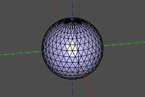
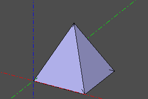

Triangulation and meshes
Shape.to_mesh() returns typed MeshData, retaining the shape graph. Its materialized record contains positions, normals, triangle indices, face IDs and the number of dropped triangles.
import zencad as z
mesh = z.box(10).to_mesh(0.5)
record = mesh.value()
assert record.vertex_count > 0
assert record.triangle_count > 0
arrays = mesh.to_numpy()
assert arrays.positions.shape[1] == 3
native = mesh.native()
mesh.positions and mesh.triangles expose numeric tuples; .to_numpy() returns fresh mutable arrays; .native() returns Poly_Triangulation. These are explicit evaluation boundaries; changing an array does not change the source shape. A mesh approximates geometry rather than retaining exact BREP. For STL/3MF, export directly without manually creating a mesh.
Displaying a mesh
import zencad as z
model = z.torus(30, 8) - z.box(60, 12, 12, center=True)
mesh = model.to_mesh(linear_deflection=0.35)
z.display(mesh, color=z.orange, display_mode="shaded_with_edges")
z.show()
The viewer displays the mesh directly without converting each triangle into a
BREP face. Display modes are shaded_with_edges, shaded and wireframe.
linear_deflection and angular_deflection control detail; crease_angle
defines edges where normals remain split.
Polyhedron
polyhedron(pnts, faces, shell=False) builds a shape from vertices and faces
specified by vertex indices. Set shell=True to construct a shell instead of a solid.
import zencad as z
mesh = z.sphere(10).to_mesh(0.5)
model = z.polyhedron(mesh.positions, mesh.triangles)
z.display(model)
z.show()

Convex hull
convex_hull computes face indices for the convex hull of a point set;
convex_hull_shape constructs the corresponding shape. SciPy is required.
incremental and qhull_options are passed to the SciPy algorithm;
convex_hull_shape(..., shell=True) creates a shell instead of a solid.
import zencad as z
points = z.points([(0, 0, 0), (10, 0, 0), (10, 10, 0), (0, 10, 0), (5, 5, 10)])
model = z.convex_hull_shape(points)
z.display(model)
z.show()
